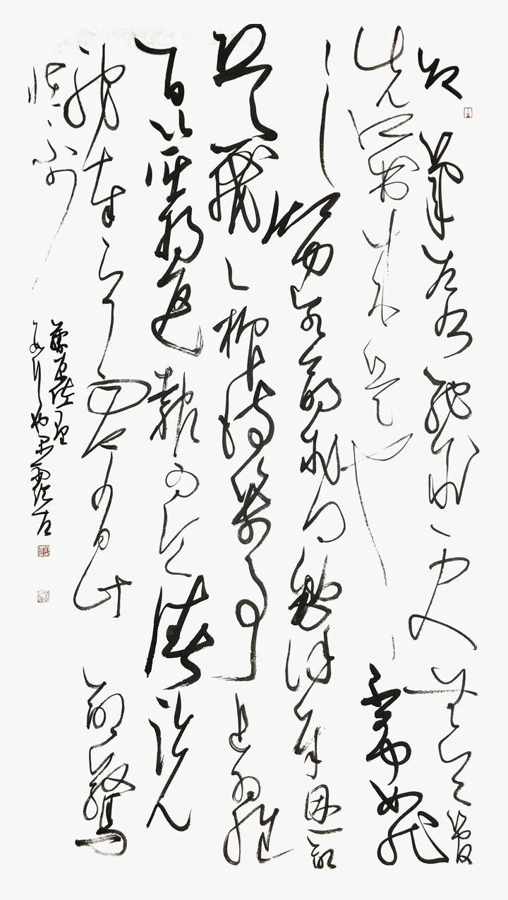

草书创作作品

有很多书友，笔画练得不错，但是一写字就不行了；
还有的单字写得还不错，但是放在一起就不好看了...
这就是没了章法。
董其昌云：“古人论书，以章法为一大事，盖所谓行间茂密是也。”
草书若没了章法，就是典型的“胡乱画”，连欣赏性都没有，就更别说艺术性了。
草书是书法金字塔的“塔尖”，一直被许多人视为老虎。
关于章法，历代都有许多关于它的论述，如孙过庭“草以使转为形质，以点画为性情”，
怀素“吾观夏云多奇峰”，以及索靖的《草书势》，武帝萧衍的《草书状》等等，读起来往往不知所云。
所谓：“集画成字，集字成行，集行成幅。”
12届国展入展书家刘强说：“草书作品的章法包括了两个方面。
第一个方面是在草字字法的制约下的单字结构；
第二个方面是以审美的观念把众多的草字组合在一起的整章构图。
这两方面各种书体大都相同，然而草书是“眼布匀称”的“散乱布白”，在章法的要求上则是以整章效果
的美感为第一要求的，其他各个部分均是为此服务。”
他的这番话道出了草书章法的本质：草书线条的轻重徐急和草书单字结构的俯仰揖让，都是在整章效果的制约下进行的。